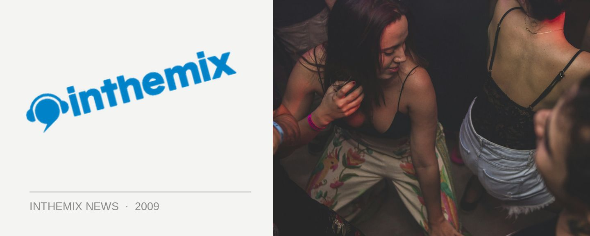

Days Like This! lineup gets fatter
The lineup for Days Like This! in January was already looking very impressive, with a solid crew hip hop, electronica, indie-rock, roots and more from Australia and across the world, but it’s been fattened out nicely with a new selection of artists who have been added to the lineup.
Drum n’ bass stalwart DJ Marky will be the top of the line addition for dance fans, alongside jazz/funk/disco veteran Theo Parrish and leftfield legends Neon Indian. That’s not to mention the solid list of local supports who have also been added to the affair like Lost Valentinos, Mo Funk, Simon Caldwell and more.
Days Like This! Returns to Moore Park in Sydney on Sunday 10th January 2010, proudly presented by inthemix! Check out the lineup additions below…
Theo Parrish
DJ Marky
Space Invadas [Katalyst And Steve Spacek]
Lost Valentinos
Flevans
Neon Indian
Ro Sham Bo
Basslines Crew
Gary Todd
Thief & Eliza Wolfgramm
Firehouse Crew
Mo Funk
Soulshaker DJs
Simon Caldwell
DJ Ology
Noel Boogie
DJ Bentley
BC (SWAT)
Huwston
Joining the existing lineup…
Method Man & Redman
Roots Manuva
The Cat Empire
Amp Fiddler
Cat Power & Dirty Delta Blues,
The Black Seeds
Pivot
Ugly Duckling
Mayer Hawthorne
LTJ Bukem & Mc Conrad
Dilated Peoples
Quantic (DJ Set)
The Bamboos Feat: Kylie Auldist
Joker
Marva Whitney
The Nextmen
Micachu & The Shapes
Thunderheist
We Have Band
Nickodemus
Cassette Kids,
Pépé Bradock
Tom Ugly
Teenagersintokyo (DJ Set)
Brennan Green
Harmonic 313
Matthias Meyer
Apsci
Lee Douglas & Lovefingers
The Swiss!